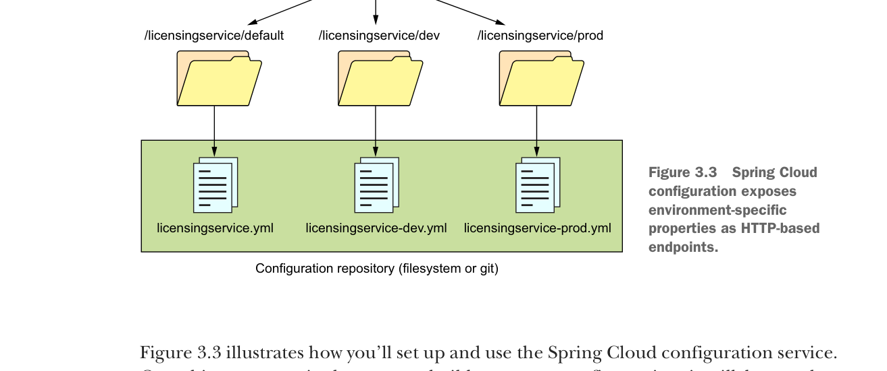

Spring Cloud configuration exposes environment-specific properties as HTTP-based endpoints.
Figure 3.3 illustrates how you’ll set up and use the Spring Cloud configuration service. One thing to note is that as you build out your config service, it will be another microservice running in your environment. Once it’s set up, the contents of the service can be access via a http-based REST endpoint.
The naming convention for the application configuration files are appname-env.yml. As you can see from the diagram in figure 3.3, the environment names translate directly into the URLs that will be accessed to browse configuration information. Later, when you start the licensing microservice example, the environment you want to run the service against is specified by the Spring Boot profile that you pass in on the command-line service startup. If a profile isn’t passed in on the command line, Spring Boot will always default to the configuration data contained in the application.yml file packaged with the application.
Here’s an example of some of the application configuration data you’ll serve up for the licensing service. This is the data that will be contained within the confsvr/src/main/resources/config/licensingservice/licensingservice.yml file that was referred to in figure 3.3. Here’s part of the contents of this file:
tracer.property: "I AM THE DEFAULT"
spring.jpa.database: "POSTGRESQL"
spring.datasource.platform: "postgres"
spring.jpa.show-sql: "true"
spring.database.driverClassName: "org.postgresql.Driver"
spring.datasource.url: "jdbc:postgresql://database:5432/eagle_eye_local"
spring.datasource.username: "postgres"